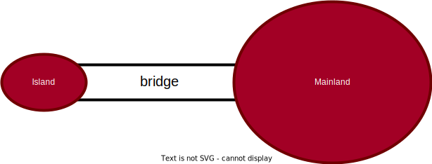
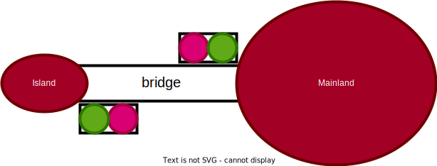
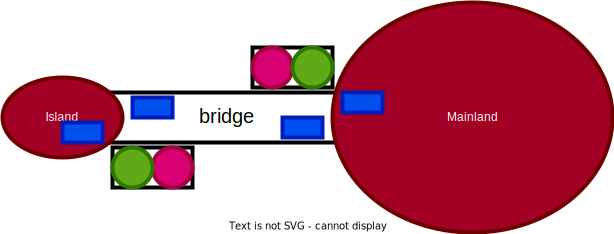
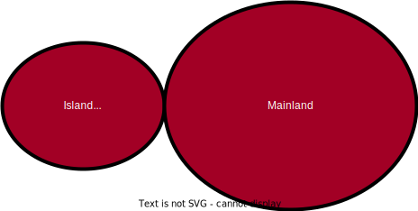

3A cursus ingénieurs - Mention Sciences du Logiciel
CentraleSupelec - Université Paris-Saclay - 2023/2024
CentraleSupelec - Université Paris-Saclay - 2023/2024

The Rodin Platform
- The Rodin Platform is an Eclipse-based IDE for Event-B that provides effective support for refinement and mathematical proof.
- The platform is open source, contributes to the Eclipse framework and is further extendable with plugins.
-
Rodin Platform and Plug-in Installation:
- Requires Java 11
- Download the Core: Rodin Platform file for your platform.
- Install the Atelier B Provers plugin from the Atelier B Provers Update site.
Purpose of this Lecture
- To present an example of system development
- Our approach: a series of more and more accurate models
- This approach is called refinement
- The models formalize the view of an external observer
- With each refinement observer “zooms in” to see more details
Purpose of this Lecture
- Each model will be analyzed and proved to be correct
- The aim is to obtain a system that will be correct by construction
- The correctness criteria are formulated as proof obligations
- Proofs will be performed by using the sequent calculus
- Inference rules used in the sequent calculus will be reviewed
What you will Learn
- The concepts of state and events for defining models
- Some principles of system development: invariants and refinement
- A refresher of classical logic and simple arithmetic foundations
- A refresher of formal proofs
Remark :
Theoretical background provided during development.
A Requirements Document
- The system we are going to build is a piece of software connected
to some equipment. - There are two kinds of requirements:
- those concerned with the equipment, labeled EQP,
- those concerned with the function of the system, labeled FUN.
- The function of this system is to control cars on a narrow bridge.
- This bridge is supposed to link the mainland to a small island.
A Requirements Document
- FUN-1: the system is controlling cars on a bridge
between
the mainland and an island

A Requirements Document
The controller is equipped with two traffic lights with two colors.
- EQP-1:
- the system has two traffic lights with two colors: green and red.
-
one of the traffic lights is situated on the mainland and the other
one
on the island. Both are close to the bridge.

A Requirements Document
- EQP-2:
the traffic lights control the entrance to the
bridge
at both ends of it - EQP-3:
cars are not supposed to pass on a red traffic
light,
only on a green one
A Requirements Document
- EQP-4: the system is equipped with four car sensors each with two states: on or off
- EQP-5:
the sensors are used to detect the presence
of cars entering
or leaving the bridge

A Requirements Document
- FUN-2: the number of cars on the bridge and the island is limited
- FUN-3: the bridge is one way or the other, not both at the same time
Our Refinement Strategy
- Initial model: Limiting the number of cars (FUN-2)
- First refinement: Introducing the one way bridge (FUN-3)
- Second refinement: Introducing the traffic lights (EQP-1,2,3)
- Third refinement: Introducing the sensors (EQP-4,5)
Our Refinement Strategy
- Initial model: Limiting the number of cars (FUN-2)
- First refinement: Introducing the one way bridge (FUN-3)
- Second refinement: Introducing the traffic lights (EQP-1,2,3)
- Third refinement: Introducing the sensors (EQP-4,5)
Initial Model
- It is very simple
- We completely ignore the equipment: traffic lights and sensors
- We do not even consider the bridge
- We are just interested in the pair “island-bridge”
- We are focusing FUN-2: limited number of cars on island-bridge
A Situation as Seen from the Sky
Two Events that may be Observed

Formalizing the State
Formalizing the State
Event ML_out
- This is the first transition (or event) that can be observed
- A car is leaving the mainland and entering the Island-Bridge

- The number of cars in the Island-Bridge is incremented
Event ML_in
- We can also observe a second transition (or event)
- A car leaving the Island-Bridge and re-entering the mainland

- The number of cars in the Island-Bridge is decremented
Formalizing the two Events (Approximation)
- An event is denoted by its name and its action (an assignment)
- Event
ML_outincrements the number of cars- ML_out $\mathrel{\widehat=}$
- then
- act0_1: $n := n + 1$
- end
- then
- ML_out $\mathrel{\widehat=}$
- Event
ML_indecrements the number of cars- ML_in $\mathrel{\widehat=}$
- then
- act0_1: $n := n - 1$
- end
- then
- ML_in $\mathrel{\widehat=}$
Why an Approximation?
- These events are approximations for two reasons:
- They might be refined (made more precise) later
- They might be insufficient at this stage because not consistent
with the invariant
- We have to perform a proof in order to verify this consistency.
Invariants
- An invariant is a constraint on the allowed values of the variables
- An invariant must hold on all reachable states of a model
- To verify that this holds we must show that
- the invariant holds for initial states, and
- the invariant is preserved by all events
- We will formalize these two statements as proof obligations (POs)
- We need a rigorous proof showing that these POs indeed hold
Before-after Predicates
- To each event can be associated a before-after predicate
- It describes the relation between the values of the variable(s)
just before and just after the event occurrence - The before-value is denoted by the variable name, say
$n$ - The after-value is denoted by the primed variable name, say
$n'$
Before-after Predicate Examples
- The Events
- ML_out $\mathrel{\widehat=}$
- then
- act0_1: $n := n + 1$
- end
- then
- ML_in $\mathrel{\widehat=}$
- then
- act0_1: $n := n - 1$
- end
- then
- The corresponding before-after predicates
- $n' = n + 1$
- $n' = n - 1$
- These representations are equivalent.
About the Shape of the Before-after Predicates
- The before-after predicates we have shown are very simple
- $n' = n + 1$
- $n' = n - 1$
- The after-value
$n'$is defined as a function of the before-value$n$ - This is because the corresponding events are deterministic
- In later lectures, we shall consider some non-deterministic events: $$n' \in \{n + 1, n + 2\}$$
NEW SLIDE

Our Refinement Strategy
- Initial model: Limiting the number of cars (FUN-2)
- First refinement: Introducing the one way bridge (FUN-3)
- Second refinement: Introducing the traffic lights (EQP-1,2,3)
- Third refinement: Introducing the sensors (EQP-4,5)
NEW SLIDE
Our Refinement Strategy
- Initial model: Limiting the number of cars (FUN-2)
- First refinement: Introducing the one way bridge (FUN-3)
- Second refinement: Introducing the traffic lights (EQP-1,2,3)
- Third refinement: Introducing the sensors (EQP-4,5)
NEW SLIDE
Our Refinement Strategy
- Initial model: Limiting the number of cars (FUN-2)
- First refinement: Introducing the one way bridge (FUN-3)
- Second refinement: Introducing the traffic lights (EQP-1,2,3)
- Third refinement: Introducing the sensors (EQP-4,5)
NEW SLIDE
NEW SLIDE